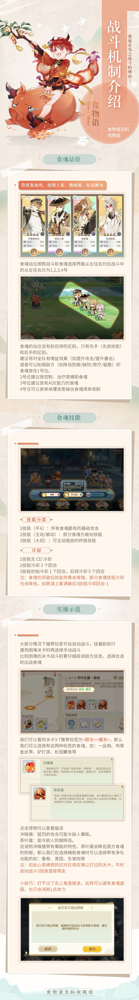

♦食物語 介紹&攻略
1.玩家信息：
可以更改昵稱、生日、食魂、黴章、更換外觀等功能。
2.體力：
時間恢復(5分鐘1點)、使用道具(例：一碗米飯)、愛心餐盒(規定時間登入領取)等方法獲得。
3.貝幣：
空桑常見的通貨之一。
食神伊摯撼將先秦使用的貨幣帶到空桑作為通貨，沿用至今。
可以通過在線獎勵、簽到、餐廳等方法獲得。
4.金玉：
空桑珍貴的通貨之一。
以傳統鑲嵌工藝將金器和美玉結合，象征高貴與純結。
可以通過在線獎勵、簽到、日常任務等方法獲得。
5.活動：
包含活動中心(例：等級獎勵、登錄福利、愛心餐盒等)、遊戲公告。
6.排行：
包含各種排行榜，例：收集榜、等級榜、家園榜等。
7.好友：
可以互贈友情點。
友情點代表玩家之間友情深淺的點數值，可用於友情商店兌換獎勵。
8.郵件：
可以查看郵件。
9.設置：
可以進行各種設置，例：輔助設置、音頻設置、錄屏設置等。10.組隊：
琳琅幻境、金秋願林關卡可組隊挑戰。
隊長需要調配二位食魂上陣，隊員需要調配1-2位食魂上陣。
隊長擁有拖動調整食魂隊伍站位的權力。
組隊狀態下通關將獲得更多關卡獎勵。
組隊狀態下通關無法解鎖新難度關卡。
組隊狀態下無法使用淨化功能救助重傷食魂。
組隊狀態下陣亡的食魂在戰鬥結束後不會進入虛弱狀態，即無需藥浴調理即可再次投入戰鬥。
11.自製：
14級開啟自製劇情的功能。
少主可在自製劇情中自由發揮想象，選用空桑中食魂或背景圖片編輯心中的故事。
劇情編輯或更改完成後，可選擇是否發布或更新到自製榜單。
人氣值根據少主的粉絲量、作品被推薦數量、作品點讚數量等換算。
提升人氣值，可升級作者稱號(書生-墨客-才子-文豪-宗師-泰斗)，獲得更多編輯自製劇情的位置。
12.圖鑑：
(1)掠影篇：
♦包含風物、回憶、典藏。
♦典藏：
首次通過主線關卡可獲得本章相關回憶碎片。
回憶碎片用於「典藏回憶」的解鎖，湊齊碎片可獲得整圖。
每解鎖一張完整的「典藏回憶」可領取相應獎勵。
(2)膳貝篇：
琳琅幻境(18級開啟琳琅幻境)、膳具商店(18級開啟商店-裝備商店頁籤)能獲得。
(3)食魂篇：
可以查看食魂的信息。
(4)相逢篇：
可以查看其他角色的信息。
(5)故事篇：
♦包含主線故事、角色故事、活動故事、餐廳筆記、書信、空桑小報。
♦主線故事首次回看能領取回看獎勵。
♦角色故事需達食魂到一定的好感度解鎖。
♦書信需食魂進行升星獲得。
(6)天工篇：
能查看家具的收集進度。
13.成就：
♦包含食魂卷、田園卷、歷練卷、探秘卷。
♦完成指定成就可領取相應獎勵。
14.協會：
15級開啟協會的功能，是志同道合的成員們共同組建的交流團體。
鎮會食魂代表協會派系，可由會長更改。
完成協會任務可獲得協會活躍度，提升協會活躍度可提升協會等級。
協會成員參與協會活動，可獲得協會貢獻，協會貢獻可於協會商店兌換獎勵。
15.食魂：
(1)食魂：
♦升級：
代表食魂的能力等級，可通過出戰或食用兔兔包獲得用食魂經驗。
獲得點擊+號能為食魂升級，升級食魂需要消耗兔兔包。
兔兔包可以通過兔來運轉、家園領取、主線副本獲得。
♦升星：
食魂達到一定等級上限時即可升星。
食魂升星後，將提升等級上限並獲得大量能力屬性。
若升食魂擁有生活技能，則達到一定星級時可提升生活技能等級。
升星需要消耗材料，升星所需的材料可在金秋願林裡獲得。
♦突破：
食魂突破後，食魂技能效果提升。
突破需要消耗同名食魂或調料。
食魂突破後可獲得煥新時裝，不同品質的食魂，獲得時裝所需的突破花瓣數不同。
♦技能：
技能分為戰鬥技能與生活技能。
戰鬥技能分為主動技能與被動技能，在戰鬥中被動技能自動釋放，而主動技能需主動釋放。
生活技能在家園等非戰鬥類玩法中生效，為食魂帶來各種附加效果。
♦膳具(18級開啟)：
膳具分為箸勺、酒器、盛器三種類型，相同材料的三種類型膳具將組成膳具套裝。
食魂裝備膳具後可增加相應屬性，裝備膳具套裝可激活相應膳具套裝效果。
不同膳具所提供的屬性各有千秋，為食魂裝備合適的膳具，才能發揮最大效果。
膳具能相互成為其他膳具的強化材料，品質越高的膳具，能提供更多的膳具經驗，強化時也需要更多的膳具經驗與貝幣。
膳具可通過挑戰琳琅幻境獲得。
(2)調理：
正確的藥方能大大地縮短調理時間。
(3)信物：
♦收集一定數量的信物能召喚食魂。
♦信物可從梅影尋蹤(16級開啟)、協會許願(15級開啟)等方法獲得。
(4)分解：
♦魂玉為食魂解魄後的靈魂碎片，薀含著食魂的寄念。
♦魂玉可用於魂玉商店兌換獎勵。
16.倉庫：
包含材料、膳具、食物、禮物，可以查看或使用道具。
17.商店：
(1)包含兌換、雜貨、月俸、直購。
(2)兌換：
可以使用友情點、金玉兌換頭像、頭像框、背景。
(3)雜貨：
可以使用金玉、魂玉購買道具，例：
食魂擴容(增加食魂容量限)、膳具倉庫擴容(增加膳具倉庫容量上限)、調料(食魂突破通用材料)等。
18.庄園：
(1)探索(異域探索)：
探索度越高，額外獎勵越多。
使用擁薦食魂可以達到更高的探索度。
(2)家園：
戰鬥或探索獲得的存糧，可點擊左下方蒸兔包按鈕，在此蒸製為兔兔。
家園的舒適度，可影響蒸兔包的成品率。
點擊下方+號可添加入住家園的食魂，入住食魂可以增加小屋舒適度。
巧聖閣能獲得家具(每天24點刷新兔費祈福)，家具可以點擊管理進行擺放或販賣。
點擊參觀可以詢問其他玩家的家園，給家園點讚。
(3)農場：
農場裡有各種農場建築，解鎖後便可生產食材。
如果食材充足，我們就可以去廚房烹飪了。
農場建築升級道具，可通過宴會(13級開啟)、金玉商店獲得。
(4)廚房：
♦烹飪：
所有食魂階可任務為廚師(部分食魂的烹飪天賦出眾，烹飪時可獲特殊加成)。
廚師就位後，點擊爐灶，選擇需要烹飪的食譜，開始始烹飪吧。
點擊爐灶可以選擇「加速」烹飪菜肴、「撤銷烹飪(未消耗的食材將返還，已烹飪完的食物自動收入倉庫)」。
烹飪完畢的菜有可以點擊「取餐」進行取出。
提食物風味，可解鎖新食譜、提高食物售價、減少食材消耗或縮短烹飪時氞。
烹飪完的菜肴 可在餐廳出售，或用以完成宴會訂單(13級開啟宴會)、廟會訂單(17級開啟廟會)。
♦餐廳：
宴會：
籌備宴會訂單所需菜肴可獲得相應報酬，訂單所需菜肴可於廚房烹製獲得。
每日八點、十二點、十六點、二十點更新宴會訂單，訂單將於更新十二小時後過期作廢。
若已完成訂單，在有效期內進行結算即可獲得相應獎勵；若未完成訂單，則等待訂單過期並進行結算，同時獲得相應獎勵。
菜單：
我們在菜單上添加菜肴，客人來了便能自動上菜。
菜單為空時無法自動上菜與自動結算。
菜單中的食物可撤回倉庫。
客潮：
開啟客潮，使餐廳客似雲來，貝幣翻倍，更有驚喜掉落。
食物倉庫裡沒有食物，無法開啟客潮。
逸聞：
逸聞可於圖鑑-故事-餐廳筆記中隨時翻閱。
19.任務：
任務包含日常、周常，完成任務能獲得各種獎勵，例：主角經驗、貝幣、金玉、兔兔包、好感禮盒等。
日活躍集齊一定的數量可兌換獎勵，日活躍於每日五點清零。
20.角色：
(1)少主獲得食魂後，將解鎖相應的角色。
(2)食魂被任務為管家後，將出現在主界面上。
(3)好感度：
增加好感度的途徑有主界面互動和贈送禮物(禮物可以通過探索、開啟禮盒獲得)。
每日前五次主界面互動，可增加食魂好感度。
向食魂贈送禮物時，若投其所好，可大幅增加好感度，初次正確贈禮還可解鎖投挑語音。
每日前八次食魂進入虛弱狀態，會降低對應食魂的好感度，少主需謹慎選擇。
(4)語音、資料、故事：
當食魂好感度達到指定等級時，可解鎖相應的角色語音、資料、故事。
(5)時裝：
若擁有食魂時裝，少主可時裝界面為食魂換裝。
21.召喚：
可用空桑萬象陣來召喚食魂作伴。
22.編隊：
能將食魂編入隊伍戰鬥。
23.啟程：
(1)副本：
每個章節都有對應的困難副本，提食食魂實力能幫主更順利地通關。
(2)戰鬥：
向左拖動前進至碰到敵人，食魘攔路，點擊攻擊開始戰鬥。
點擊食魂頭像，選擇技能，準備妥當後開始攻擊。
戰鬥中可以切換目標，可以優先集火治療型的敵人。
戰鬥可以切換自動行走和自動戰鬥模式，自動有風險使用時需謹慎。
(3)助戰：
選擇助戰後可在戰鬥中使用助戰技能。
點擊右側助戰技能按鈕，可以釋放助戰食魂技能(每個關卡只能使用一次)。
(4)淨化：
戰鬥中若有食魂倒下，需及時淨化。
否則食魂會進入虛弱狀態，不能出戰，且需要極大代價才能解除虛弱。
每場戰鬥淨化次數有限，次數用完食魂有虛弱危險，切記合理使用。
淨化後的食魂還需要治療，請選擇治療技能，選擇要治療的食魂。
(5)獎勵：
通關關卡有概率獲得食魂，部分關卡有可以獲得稀有御品食魂。
完成所有關卡進度後，可以獲得通關獎勵。
(6)資源關卡：
♦金秋願林(升星)：
金黃色的堅果林，盛產各類堅果，可用於食魂升星。
♦琳琅幻境(膳具)：
18級開啟琳琅幻境，琳琅幻境中共有三類幻境，每個幻境可獲得不同的膳具。
♦兔來運轉(經驗)：
轉到兔包包標誌，即可獲得獎勵兔兔包。
轉到土匪兔標誌，則進入關卡與土匪兔戰鬥，勝利即可獲得兔兔包。
轉到箭頭標誌，則可免費再轉一次。
點擊虛上的升級按鈕，進入守衛關卡，擊敗守衛即可升級轉盤，提升兔兔包產出數量。
♦通關關卡後即可使用連續戰鬥功能，但只有實力達到碾壓方不會因為戰敗而中斷連續。
♦戰鬥失敗的話，建議通過以下途徑提升隊伍實力後再來挑戰：升級、升星、突破。
(7)教學關卡：
完成教學關卡能獲得相應獎勵。
(8)廚藝大賽：
挑戰其他廚師可獲得評分提升廚師稱號。
挑戰對手勝利或者失敗均可獲得相同的蟠桃獎勵，但挑戰勝利則評分增加，失敗則評分不變。
在宴席陣容處可更換您的防守陣容，防守時若被對手擊敗，則會相應扣除評分，因此請玩家上陣更強的參賽隊伍。
蟠桃可於廚藝商店兌換商品。
(9)珍饈鑑宴：
挑戰烹飪佳有，可獲豐厚獎勵。
完成食魂指定的「烹飪實踐」，可掌握對應佳肴。
複雜的佳肴需完成「烹飪實踐」和「菜譜研究」，兩場考驗均獲勝才能掌握佳肴。
首次掌握佳肴，可獲得首次通關獎勵。

鵠羹

龍鬚酥

冰糖葫蘆

餃子

春捲

貓耳朵

湯圓

粽子

調料

桃花粥

桂花酒

月餅

櫻桃畢羅

臘八粥

屠蘇酒

年年有餘

年糕

孟婆湯

楊枝甘露

滷肉販

素蒸音聲部

德州扒雞

八仙過海鬧羅漢

詩禮銀杏

四喜丸子

蔥燒海參

西湖醋魚

片兒川

青團

龍井蝦仁

蟹釀橙

紹興醉雞

新風鰻鯗

東坡肉

楊州炒飯

松鼠鱖魚

叫花雞

蟹黃湯包

三鮮脫骨魚

糯米八寶鴨

霸王別姬

佛跳牆

雞茸金絲筍

太極芋泥

蚵仔煎

擔仔麵

吉利蝦

東璧龍珠

烤乳豬

鼎湖上素

蝦餃

蜜汁叉燒

煲仔飯

雙皮奶

金玉滿堂

風生水起

川味火鍋

宮保雞丁

麻婆豆腐

燈影牛肉

魚香肉絲

太白鴨

開水白菜

鬼城麻辣雞

臘味合蒸

剁椒魚頭

冰糖湘蓮

糖醋沅白

雲托八鮮

玉麟香腰

一品鍋

臭鱖魚

符離急燒雞

混湯酒釀元宵

醃篤鮮

北京烤鴨

驢打滾

蓮花血鴨(贛菜)

鍋包肉(東北菜)

小雞燉蘑菇(東北菜)

帶把肘子(西北菜)

羊肉泡饃(西北菜)

子推燕(晉菜)

飛龍湯(東北菜)

牡丹燕菜(豫菜)

楚夷花糕(鄂菜)
西鳳酒(西北菜)